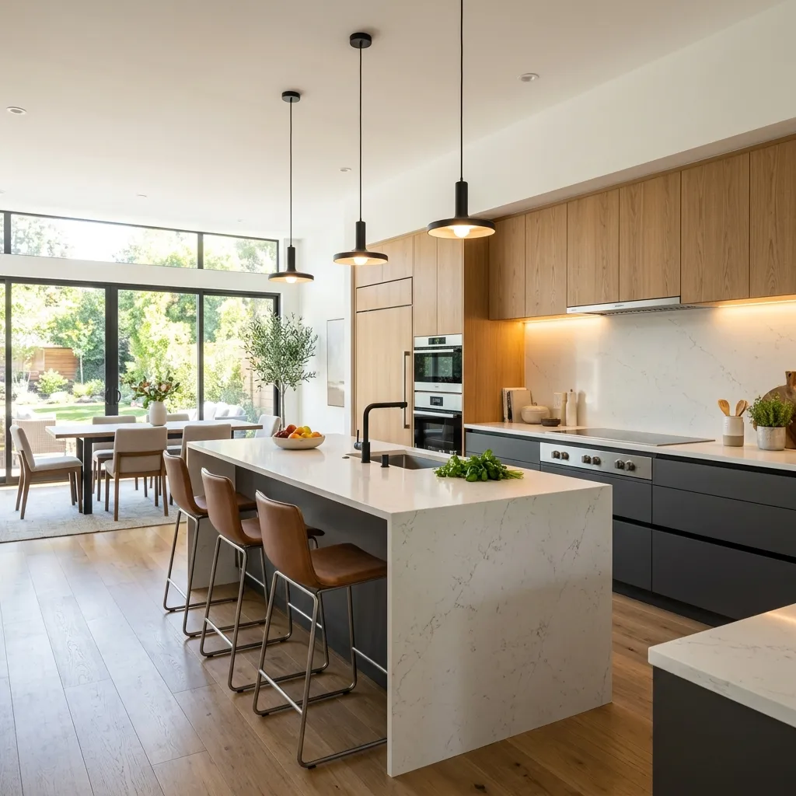
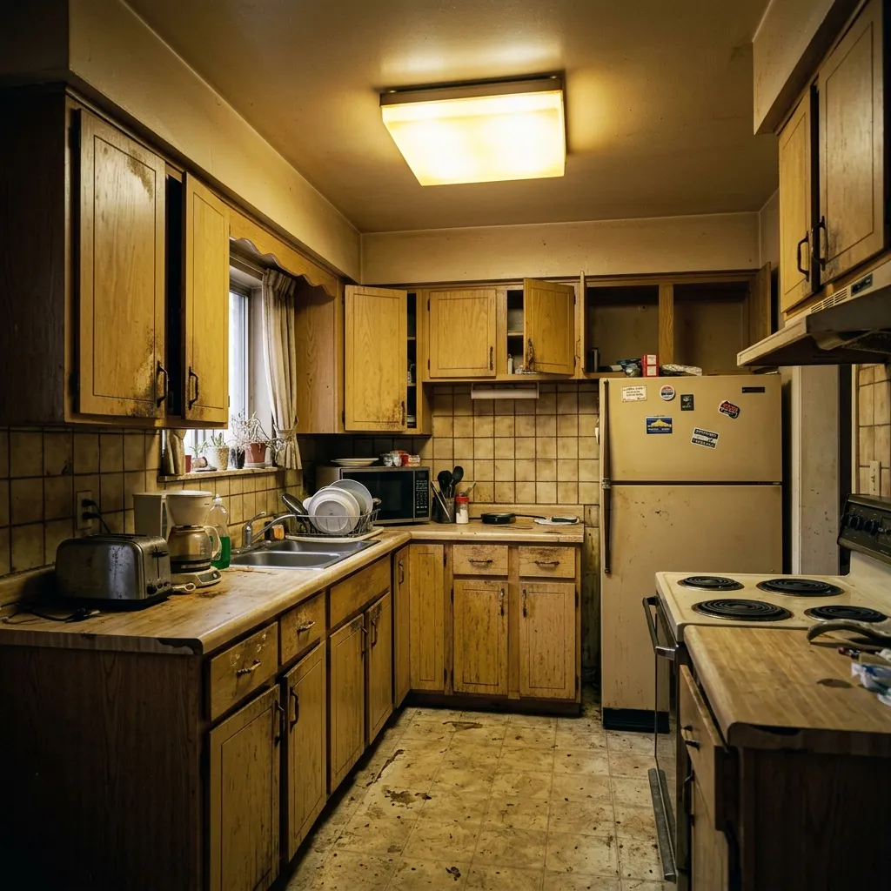

¿Cómo aumentar el valor de tu vivienda con pequeñas reformas?
Descubra las intervenciones clave de bajo coste y ejecución rápida para maximizar la plusvalía de su propiedad al vender o alquilar en Tucumán.
El poder de la primera impresión: Reformas inteligentes
En el competitivo mercado de San Miguel de Tucumán y Yerba Buena, la presentación visual y el confort térmico y lumínico definen la rapidez y el precio de venta de una propiedad. Las pequeñas reformas estéticas ejecutadas por profesionales logran revalorizar el m² considerablemente con un presupuesto controlado, superando la rentabilidad de las remodelaciones estructurales completas.
¿Sabe por qué dos departamentos idénticos en el mismo edificio de Barrio Norte se venden a precios tan diferentes?
La respuesta está en el **diseño de interiores estratégico**. Los compradores de hoy no quieren comprar una propiedad para entrar inmediatamente en obras complejas. Buscan viviendas listas para habitar, modernas, luminosas y eficientes.
Al realizar pequeñas reformas cosméticas —como un *facelift* de cocina, pintura en colores que amplíen visualmente los espacios, grifería moderna y luminarias LED cálidas— usted no solo acelera la venta en un 50%, sino que puede justificar un aumento en el precio de venta de hasta un 25%, logrando un retorno del capital invertido (ROI) de más del 150%.
Datos de Impacto
El Impacto Visual de un Facelift
Vea cómo transformamos una cocina anticuada utilizando materiales modernos, iluminación focalizada e integrando espacios sin necesidad de demoliciones estructurales invasivas.

Las 4 pequeñas reformas que más revalorizan
No es necesario demoler toda la casa. Estas cuatro intervenciones de alta velocidad generan un impacto estético masivo e incrementan el valor percibido inmediatamente.
1. Pintura Integral e Iluminación LED
Pintar el interior en tonos claros (como el blanco tiza o gris suave) amplía la percepción del espacio. Si se complementa con iluminación cálida de lámparas LED empotradas en puntos focales, se eliminan esquinas oscuras y se crea un ambiente acogedor.
2. Cocina Facelift (Lavado de Cara)
La cocina es el corazón de la tasación. En lugar de cambiar todo, reemplazamos los frentes de los gabinetes desgastados, instalamos tiradores minimalistas, cambiamos la mesada por una de granito nacional o cuarzo compuesto, y colocamos una grifería monocomando moderna de cuello alto.
3. Baños Modernizados
Reemplazar sanitarios antiguos por modelos eficientes de doble descarga, colocar un vanitory flotante de diseño con bacha de apoyo, cambiar griferías oxidadas e instalar una mampara de vidrio templado transparente amplía visualmente el baño y le otorga un aire de hotel boutique.
4. Suelos Vinílicos y Aberturas Inteligentes
Los suelos en mal estado ahuyentan compradores. La instalación de pisos flotantes vinílicos resistentes al agua (SPC) se realiza en horas directamente sobre el piso viejo. Si además reemplazamos las aberturas principales por carpinterías de aluminio con doble vidriado hermético (DVH), añadimos confort térmico invaluable.
Simulador de Incremento de Valor
Seleccione el tamaño estimado de su propiedad y marque las pequeñas reformas que le gustaría realizar. Vea cómo aumenta la tasación final de su inmueble.
Incremento estimado en el precio final de tasación de mercado de su propiedad en Tucumán.
Asesoramiento profesional y dirección técnica llave en mano.
Preguntas Frecuentes sobre Revalorización
Contenido Relacionado
Reformas de Cocinas
Tendencias, materiales de mesadas, iluminación y distribución funcional para cocinas modernas en Tucumán.
Refacciones del Hogar
Remodelaciones integrales de viviendas, baños y locales comerciales llave en mano con dirección técnica.
Construcción en Seco
Aprovechá la rapidez y aislamiento termoacústico del Durlock y Steel Framing para ampliar o refaccionar.
Maximice la plusvalía de su propiedad
Deje de perder dinero con un inmueble anticuado. Póngase en contacto con nuestro equipo técnico para recibir un presupuesto detallado llave en mano.
Garantía BYB
Respaldo profesional en obra
- check_circle Plazos de entrega estrictos
- check_circle Presupuesto cerrado sin sorpresas
- check_circle Mano de obra calificada local